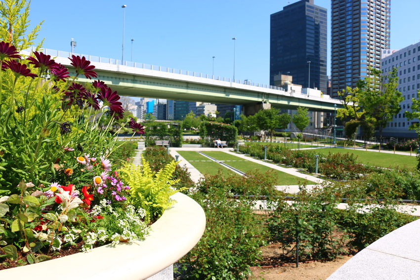
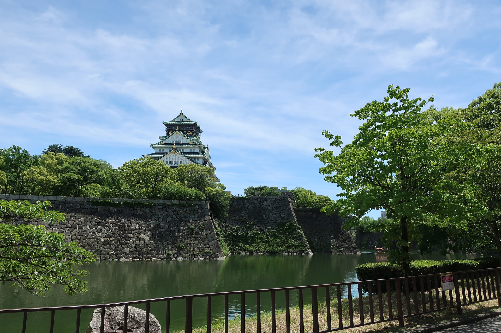
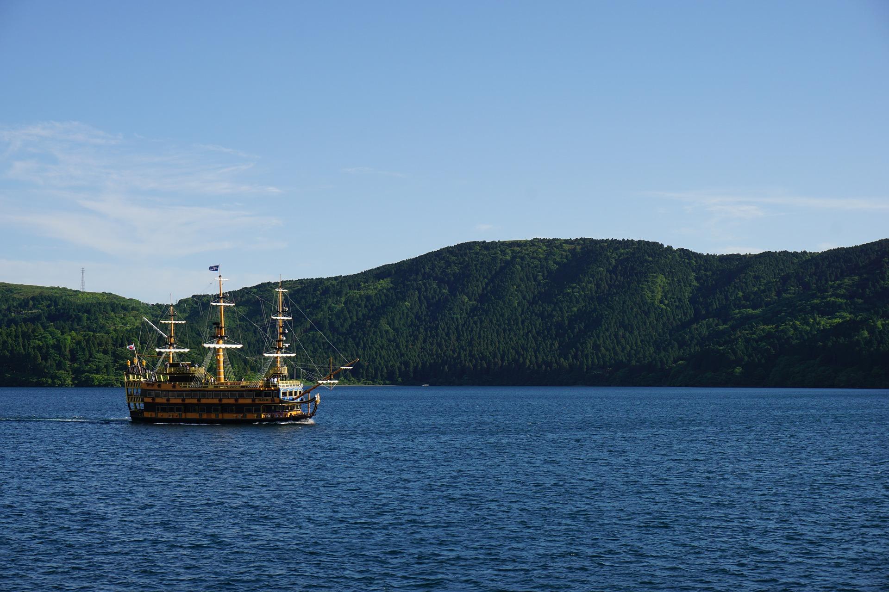
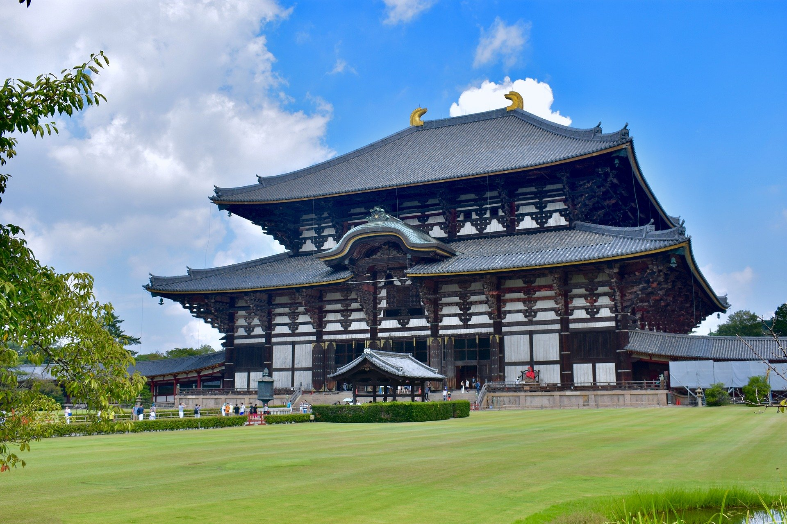
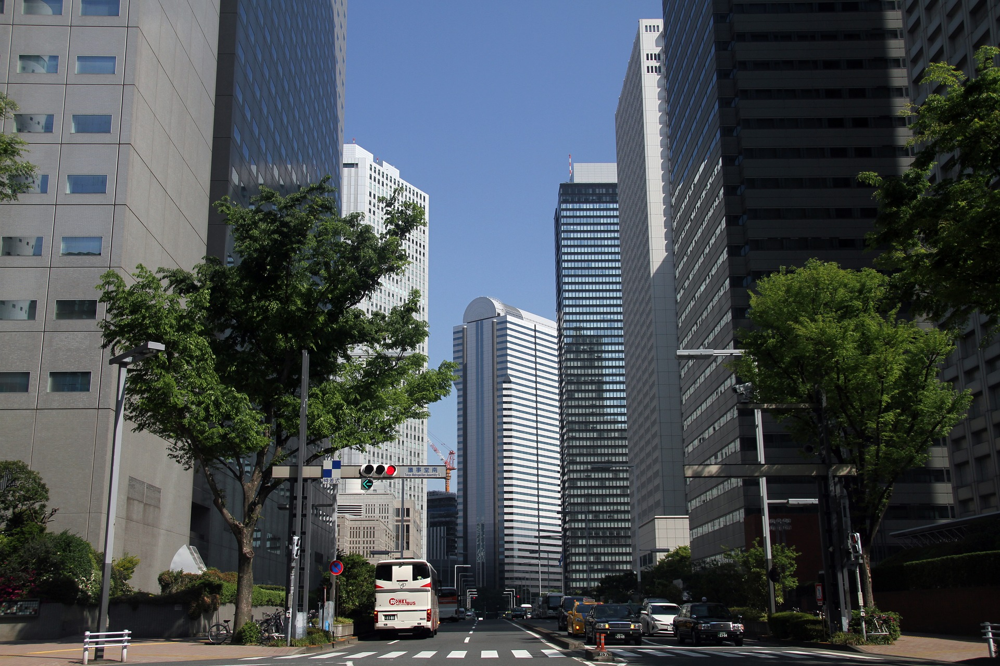
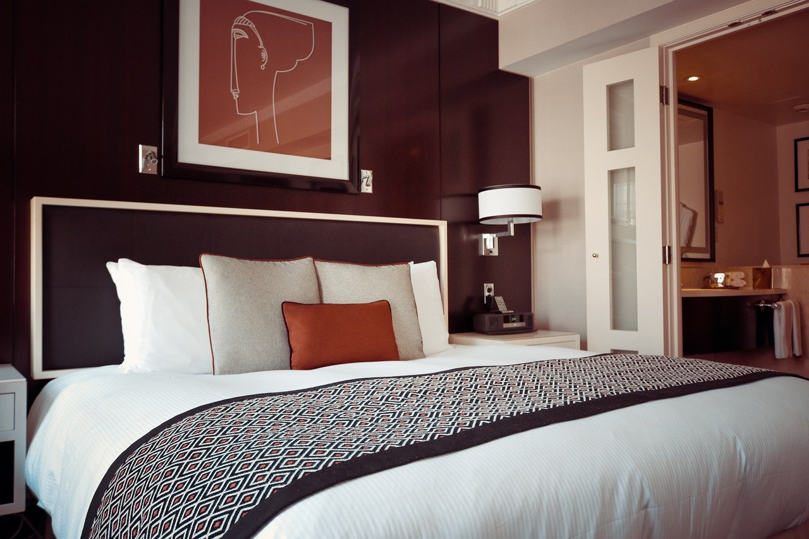

大阪市中央公会堂
文化、芸術、社会活動の場として利用されている大正時代のレトロ建築であり、大阪城天守閣とともに大阪市のシンボル。

営業時間
9:30～21:30
休日
第4火曜日（祝日の場合は翌日）、年末年始（12/28～1/4）、その他臨時休館あり
大阪・中之島の緑と水に囲まれ赤レンガが映える大阪市中央公会堂は、文化、芸術、社会活動の場として利用されているレトロ建築であり、大阪城天守閣とともに大阪市のシンボルでもある。建物は鉄骨煉瓦造の地上3階、地下1階。ネオ・ルネッサンス様式を基調としつつ、バロック的な壮大さを持ち、細部にはウィーン分離派様式も取り入れられている。アーチ状の屋根と、洋画家の松岡壽によって天地開闢が描かれた特別室の天井画・壁画が特徴だ。竣工は大正7年（1918）、建設費の100万円（現在の50億円）は、当時の株式仲買人の岩本栄之助の寄付によるもの。設計者は明治時代の建築界を代表した岡田信一郎と辰野金吾ら。2002年には改修工事が終了し、80年ぶりに竣工当時の姿として甦った。かつて社会福祉家のヘレン・ケラーや、ソ連の宇宙飛行士・ガガーリンなども訪ねている「大集会室」は、現在、講演会やコンサート会場として利用されているほか、地下1階の「中之島ソーシャルイートアウェイク」では、クラシックとモダンな雰囲気の中で料理をゆっくり楽しめる。
住所
〒 530-0005 大阪市北区中之島1-1-27
アクセス
･Osaka Metro御堂筋線･京阪電鉄「淀屋橋駅」1号出口より徒歩約5分
･Osaka Metro堺筋線･京阪電鉄｢北浜｣駅22号出口より徒歩約6分
･京阪電鉄中之島線｢なにわ橋｣駅1番出口より徒歩1分
料金
入場無料
電話番号
06-6208-2002
Fax
06-6208-2003
見学案内
HPをご確認ください。
周辺観光施設

周辺飲食



周辺ホテル

